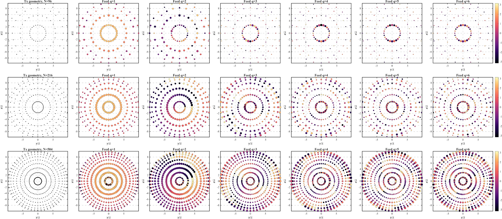
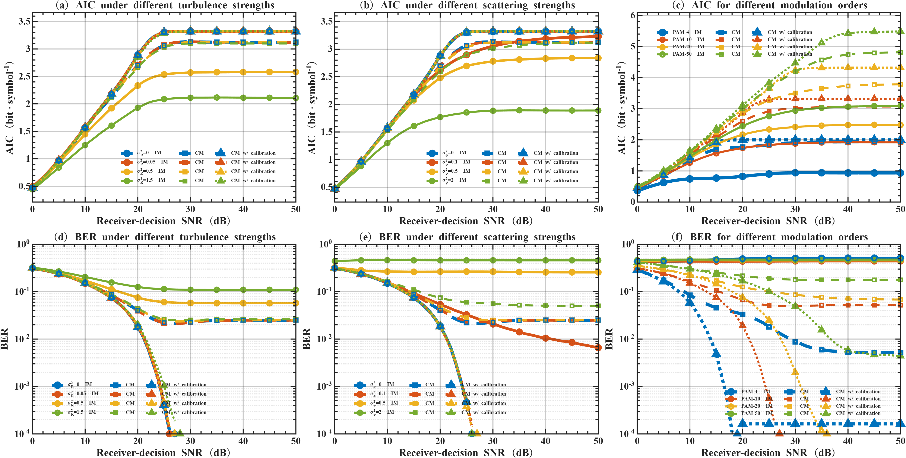

|
I am a PhD student at Tsinghua SIGS. I work on optical turbulence, free-space optics, and optical wireless communications. Previously, I received my M.E. from the same department and my B.S. from University of Electronic Science and Technology of China (UESTC). Before my M.E., I spent a year as a Research Assistant at UESTC working on electron field emission. Please feel free to contact me if you are interested in my research. |

|
News[Jan 2026] I became a Science Writer for the Chinese Laser Press, hoping to write stories about the optics community for a wider audience. Really grateful to the editors for giving me this chance! [May 2025] I passed my M.E. thesis defense. I appreciate my advisor for long-term supports. [Dec 2024] I was invited to serve as the TPC member of IEEE ICC'25 Wireless Communications Symposium. I appreciate the symposium chair for picking! |
ResearchBelow is a selected list of documents. See Google Scholar or ResearchGate for the full list and PDFs. |
|
 |
Toward Practical Continuous-Aperture MIMO: Receiver-Targeted CPSWF Synthesis for Near-Field Holographic Communications |

|
Vectorial Optical Wireless Communications: Bridging Optical Physics and Engineering for 6G and Beyond |

|
Achieving Full Spatial Degrees of Freedom: Wavefront Reconstruction for Continuous Aperture MIMO Communications |
|
 |
并发度调制直检的抗湍流水下无线光通信（特邀） |

|
OAM模式增广的自由空间光通信（特邀） |
MiscellaneaTeaching
Service
Recognition
|